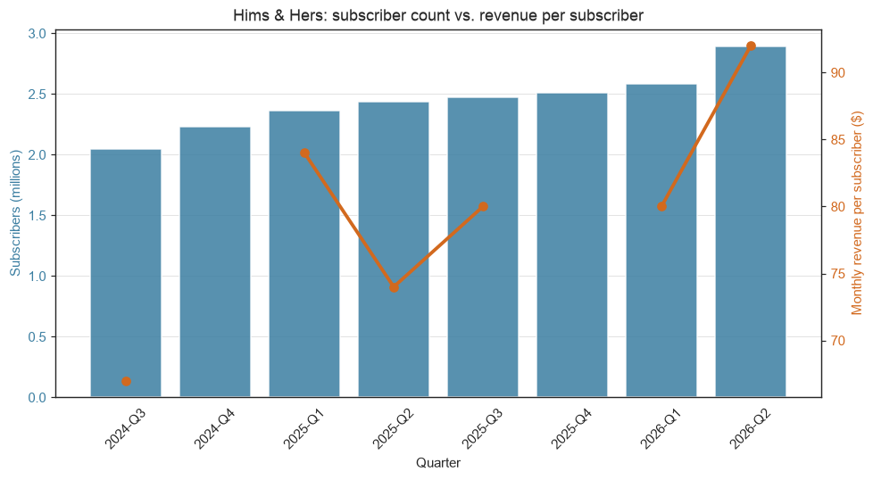
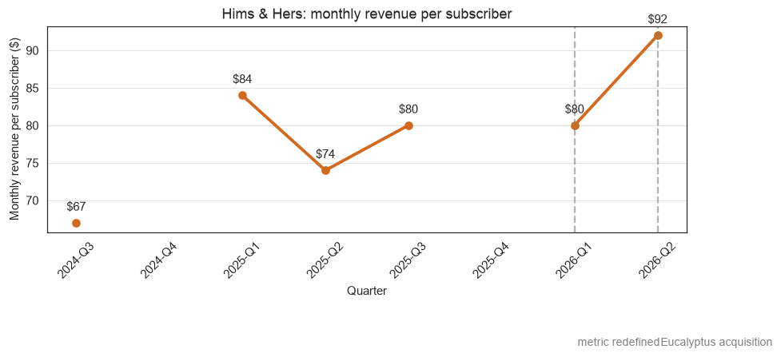
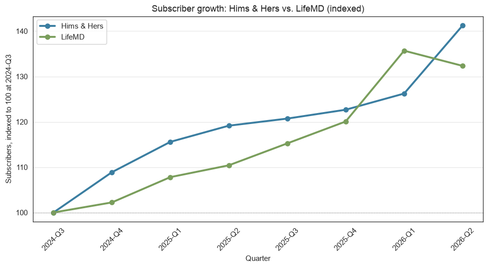
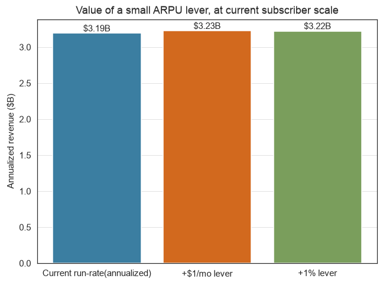
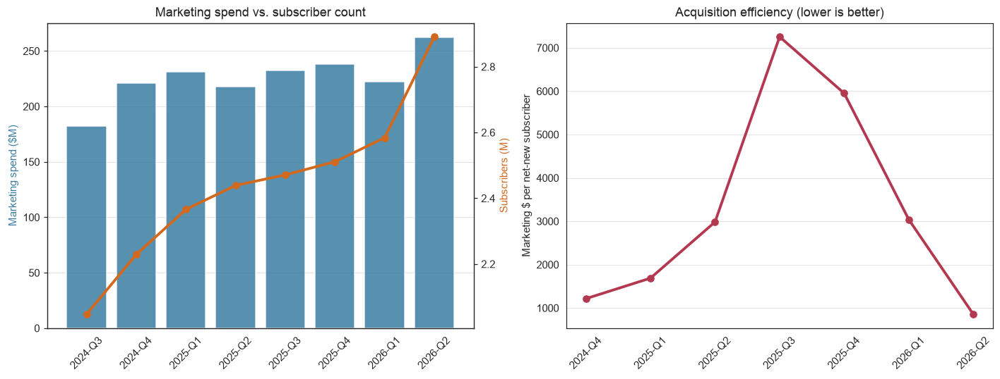

Subscription Economics
Subscriber Growth vs. Acquisition Cost
Built on real SEC filings, not a packaged dataset. Revenue and marketing spend came straight from the SEC's XBRL API; subscriber counts and revenue-per-subscriber aren't structured data at all, so those were hand-collected from 10-Q filings and earnings releases and cited to the exact source. Full write-up, code, and data on GitHub →
The question behind this project was whether Hims & Hers's growth is coming from adding subscribers or from getting more revenue out of the ones it already has, and what that split means for how efficiently the company is spending to acquire new ones. The business metrics in view were subscriber count, monthly revenue per subscriber, and marketing spend per net-new subscriber, with LifeMD and Teladoc pulled in as public comparables to see whether the pattern is specific to Hims & Hers or something happening across the category.
Asking Questions
- Is revenue growth driven more by subscriber growth or by revenue per subscriber?
- How has monthly revenue-per-subscriber trended, and what explains the jumps?
- How does subscriber growth compare to LifeMD, the one directly comparable peer?
- What is a $1/month (or 1%) increase in revenue-per-subscriber worth in incremental annual revenue?
- Is marketing spend scaling in line with, faster, or slower than subscriber growth?
Getting and Cleaning the Data
Revenue and marketing spend came straight from the SEC's XBRL Company Facts API, structured and machine-readable. Subscriber counts and revenue-per-subscriber aren't in that structured data at all, companies only disclose those as plain sentences inside 10-Q filings and earnings releases, so each one was read individually and cited to its source.
Two things had to be fixed before any of it could be compared. Companies never report a fourth quarter on its own, only the full-year total, so Q4 revenue and marketing spend were derived as the annual figure minus the first three quarters, checked against an independently researched full-year number before trusting it. And a first pass at pulling marketing spend came back empty for the exact quarters that mattered, Hims & Hers tags it under a less common field name than the one most companies use, so the extraction had to check multiple possible tag names rather than assume one works everywhere.
01Subscribers or revenue per subscriber?

Both, almost evenly. Subscribers grew about 41% and revenue per subscriber grew about 37% over the same 8 quarters. Because those two compound together rather than simply adding, total revenue nearly doubled (+88%), outpacing either driver alone. This isn't a story of just adding customers cheaply or just monetizing existing ones harder, it's both at once.
02What's behind the revenue-per-subscriber jumps?

Trending up overall but not smooth: $67 to $84 to $74 to $80 to $80 to $92 across the eight quarters. Two real events explain the jumps rather than organic pricing shifts. Hims & Hers redefined the metric in Q1 2026, adding international revenue to the base, so it's not perfectly comparable to earlier quarters. And the Q2 2026 jump to $92 includes about a month of contribution from the Eucalyptus acquisition, part inorganic, not pure pricing or mix improvement.
03How does this compare to LifeMD?

Hims & Hers and LifeMD, the one direct-to-consumer peer with a directly comparable subscriber metric, grew at similar indexed rates through most of the window, then diverged sharply in the most recent quarter. Hims & Hers accelerated to +41% cumulative growth (helped by the acquisition above), while LifeMD's subscriber count actually declined, alongside a cut to their own full-year guidance. Teladoc is left out of this comparison entirely, its "members" metric counts enterprise-contract covered lives, not paying consumers, a fundamentally different thing.
04What is a small ARPU increase actually worth?

At the current base of about 2.9 million subscribers, a $1/month increase in revenue-per-subscriber is worth roughly $35 million a year. A 1% increase is worth roughly $32 million. Neither requires adding a single new subscriber, which makes this a useful number to hold up against acquisition spend below: growing revenue-per-subscriber a little is often cheaper than growing headcount a lot.
05Is marketing spend keeping pace with subscriber growth?

No, and this was the finding that stood out most. Marketing spend stayed roughly flat, between $180M and $260M a quarter, while net-new subscribers added swung a lot. The result: acquisition cost per new subscriber climbed from about $1,200 in Q4 2024 to a peak of about $7,255 in Q3 2025, then dropped to about $854 in Q2 2026, a figure that needs its own caveat since it's inflated by the acquisition, not a genuine efficiency fix.
Conclusions & Recommendations
- Lean into the revenue-per-subscriber lever before spending more on acquisition, a 1% increase is worth about $32M a year with no acquisition cost attached.
- Figure out why acquisition cost per new subscriber jumped sixfold through 2025 before increasing marketing budget further.
- Separate organic growth from the Eucalyptus acquisition in any forward-looking growth narrative, Q2 2026's numbers blend both.
- Watch whether LifeMD's Q2 2026 subscriber decline is company-specific or an early signal for the category.
Limitations
- Aggregate, not customer-level data. Net-new subscribers per quarter nets signups against cancellations, so it can't separate an acquisition problem from a retention problem.
- LifeMD doesn't disclose revenue-per-subscriber at all, so its economics can only be compared on subscriber count, not monetization.
- Q4 figures for 2024 and 2025 are derived, not directly reported, an assumption of no prior-quarter restatement that's reasonable but not guaranteed.
- Three companies is a small sample, chosen as the clearest public comparables in this space, not a representative slice of the whole telehealth market.